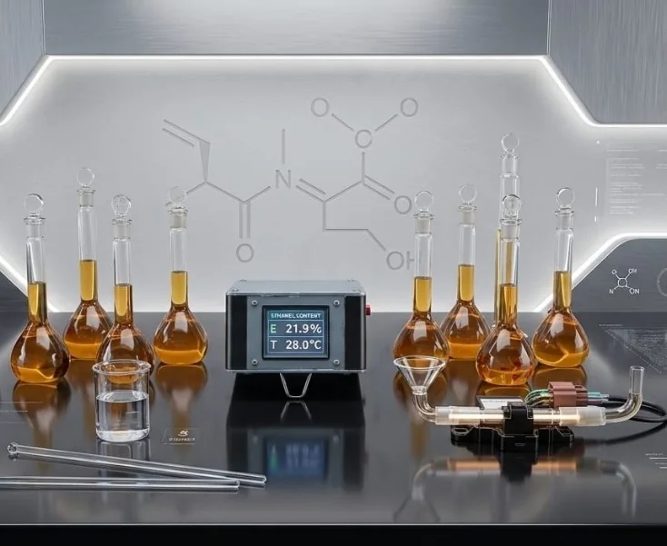

Flagship · designed by VTransys
ECMS009 NEXXT: ethanol content measuring system for gasoline blends
Fast, accurate ethanol detection for laboratories and fuel testing facilities. The ECMS009 NEXXT measures the ethanol concentration in blended commercial fuel and reads fuel temperature at the same time, so E10, E20 and higher blends can be verified consistently across sites and seasons.

Specifications
What it measures and what it needs.
Full specifications, accuracy and sample-handling details are in the datasheet. Request it and an engineer will send it with a configuration recommendation.
| Measures | Ethanol concentration in gasoline, including blended commercial fuel |
|---|---|
| Also reads | Fuel temperature, simultaneously |
| Detection | Fast ethanol detection for lab and field use |
| Installation | About 5 minutes |
| Power supply | 12 to 18 V DC, or 230 V AC |
| Designed by | VTRANSYS Solutions, Pune |
| Datasheet | Request from our team |
Key features
- Fast ethanol detection
- Installs in about 5 minutes
- Powered by 12 to 18 V DC or 230 V AC
- Simultaneous fuel temperature measurement
- Supplied, installed and supported in India
Applications
- Fuel testing laboratories
- Distilleries and blending units
- Automotive fuel research
- Quality control and retail audits
Questions engineers ask
Frequently asked questions
What does the ECMS009 NEXXT measure?
It measures the ethanol concentration in gasoline, including blended commercial fuel such as E10 and E20, and reads the fuel temperature at the same time.
How long does installation take?
About 5 minutes. The unit is designed to be set up quickly in a laboratory or at a fuel testing facility.
What power supply does it need?
It runs on 12 to 18 V DC or on 230 V AC mains, so it can be used on a bench or in the field.
Who uses it?
Fuel testing laboratories, distilleries, automotive fuel research teams and quality-control departments that need to verify ethanol blend ratios.
Can VTransys measure biodiesel or isobutanol blends too?
Yes. The Biodiesel % monitoring system and the Isobutanol % monitoring system cover FAME in diesel and isobutanol in diesel respectively.
Is support available after purchase?
Yes. VTransys provides installation, calibration services and 24/7 technical support for installed systems from Pune, India.